Isumi, Chiba: things to do, food and stays
Isumi · Chiba
Isumi
Highlighted on the Chiba map.

Stay
五氣里

Go Ki Sato
Inn in Kafushi, Isumi with a quiet countryside setting.
EKVOLI MARINA VILLA, Isumi Garden
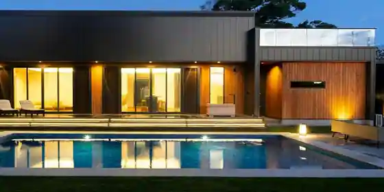
EKVOLI MARINA VILLA, Isumi Garden
Inn in Misaki, Isumi with open-air baths and a sauna.
Avalon Cove
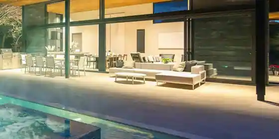
Avalon Cove
Taito Pool EDGE
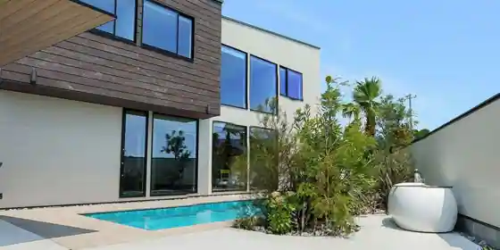
Taito Pool EDGE
Inn in Misaki, Isumi with a sauna.
Casita Laguna
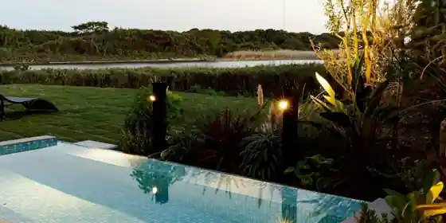
Casita Laguna
Inn in Misaki, Isumi with family-friendly stays.
庄屋の里 古民家たなか
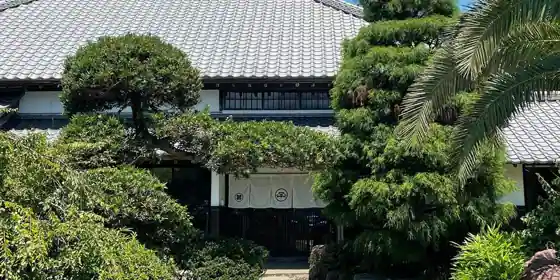
Shoya No Sato Ko Minka Tanaka
Inn in Misaki, Isumi with open-air baths and a renovated traditional house.
Capetown Resort
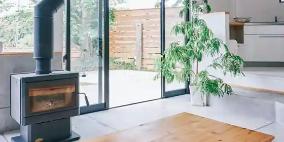
Capetown Resort
HOTEL THE MADO
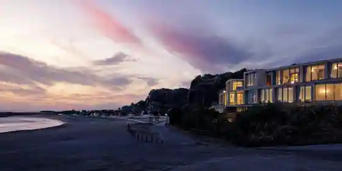
HOTEL THE MADO
tokoro hotel Isumi
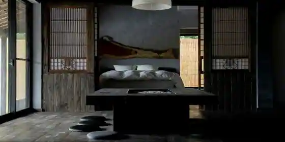
tokoro hotel Isumi
Inn in Shimobara, Isumi with open-air baths and a sauna.
古民家宿るうふ 波之家
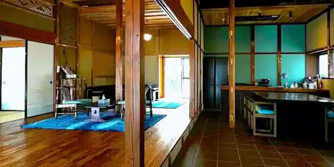
Ko Minka Yadoru Ufu Nami Yuki Ie
Inn in Koike, Isumi with a renovated traditional house.
Secret Break Isumi
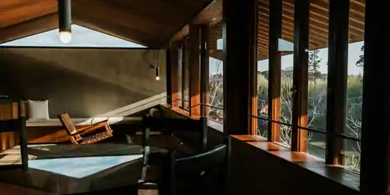
Secret Break Isumi
by the river Isumi
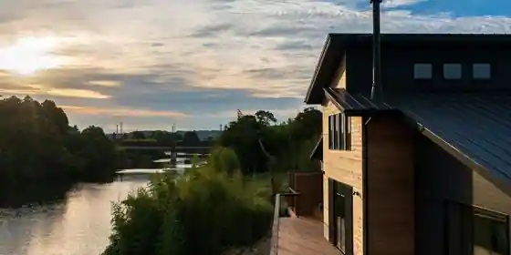
by the river Isumi
Dining
南印度料理 巡るインド

Minami Indo Ryori Meguru Indo
donner
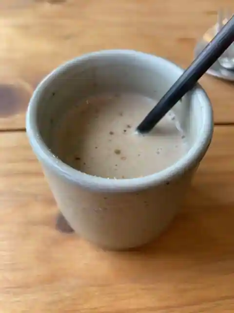
donner
鮨処 切通
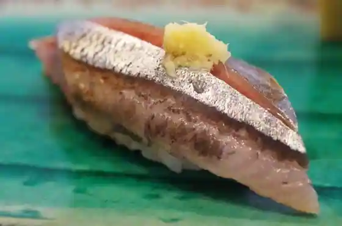
Sushi Tokoro Settsu
かさや食堂
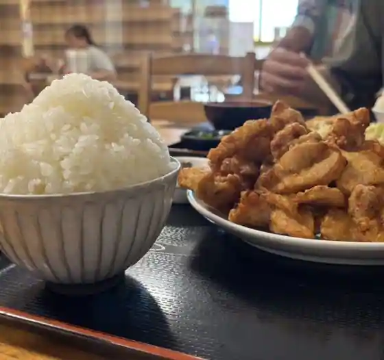
Kasaya Shokudo
漁協直営食堂 いさばや
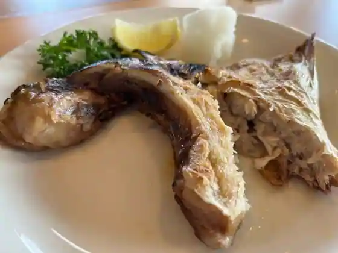
Gyokyo Chokuei Shokudo Isabaya
高秀牧場 ミルク工房
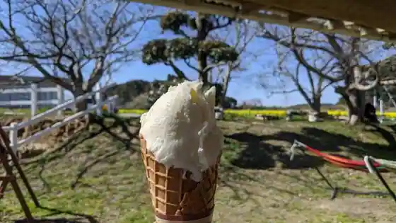
Takahide Bokujo Miruku Kobo
豚の穴
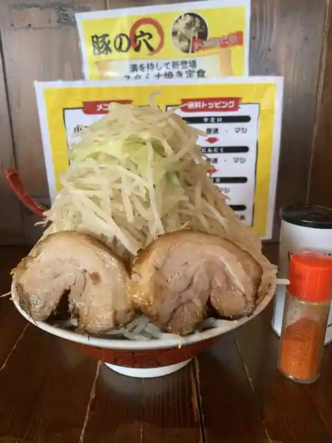
Buta No Ana
船頭の台所
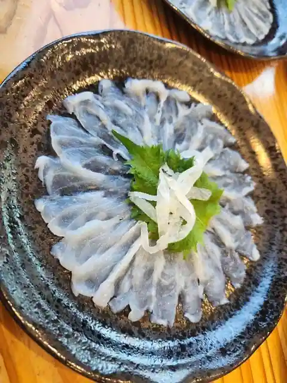
Sendo No Daidokoro
女良食堂
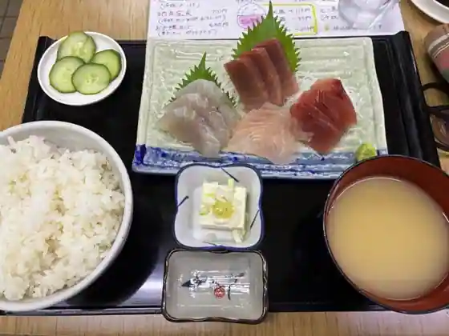
Onna Ryo Shokudo
かねよ食堂
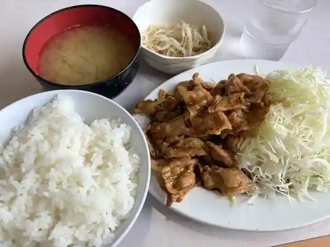
Kaneyo Shokudo
藤与し
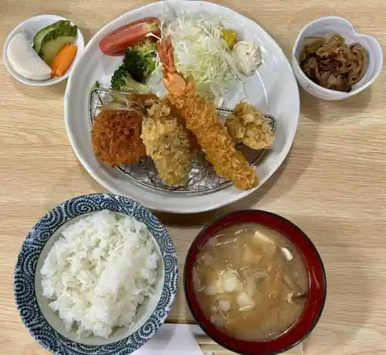
Fuji Kumishi
SorveteriaPraia
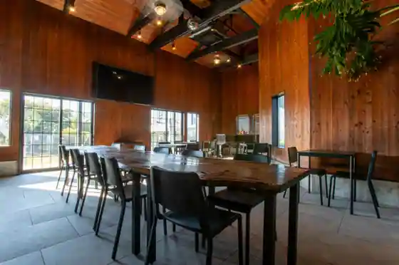
SorveteriaPraia
イートス ベイクド スイーツ
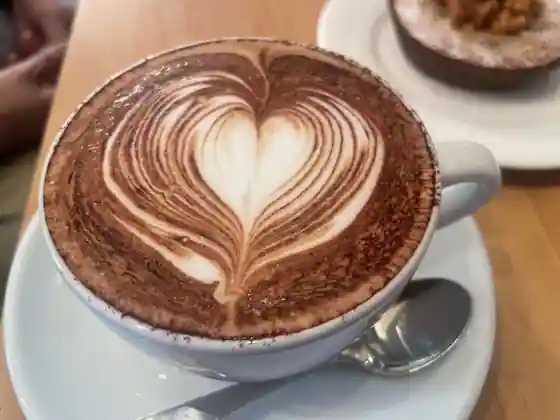
Itosu Beikudo Sweets
手打ちそば 太東角萬
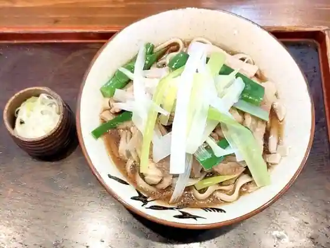
Teuchi Chisoba Taito Kaku Man
杢珈琲
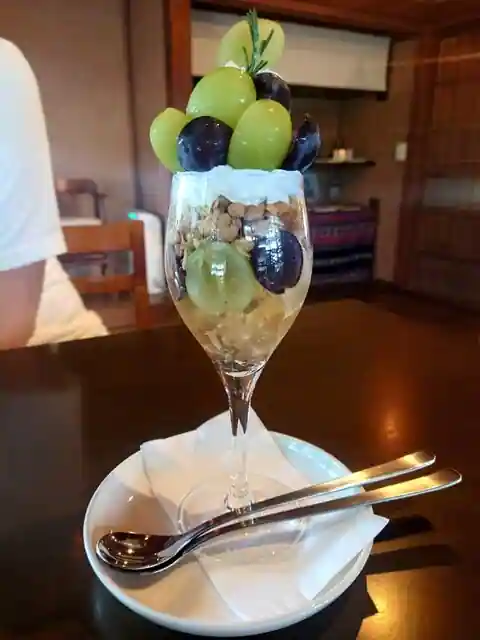
Moku Coffee
海老屋
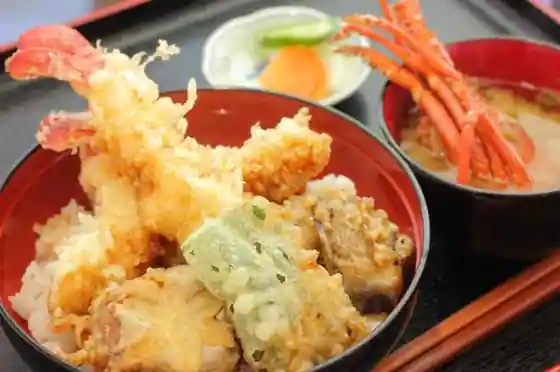
Ebi Ya
Campagna
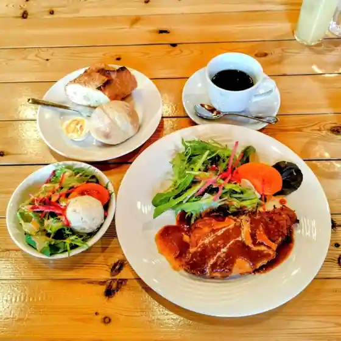
Campagna
どんちゃん
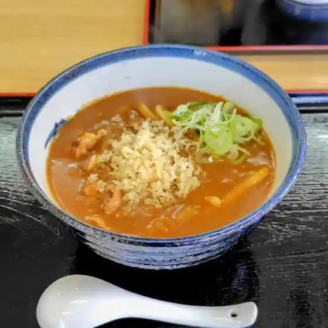
Donchan
割烹かねなか
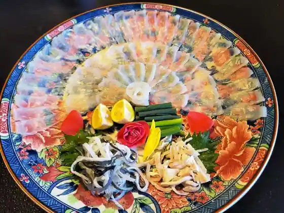
Kappo Kanenaka
ワン、ツウ、エイト
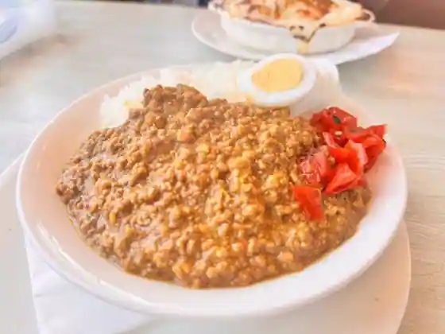
Wan, Tsu, Eito
エスニックカフェ クローバー
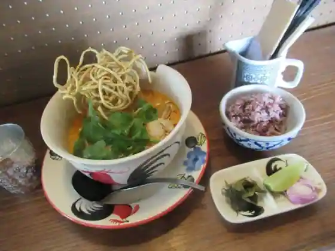
Esunikku Cafe Kuroba
いけす料理 あき
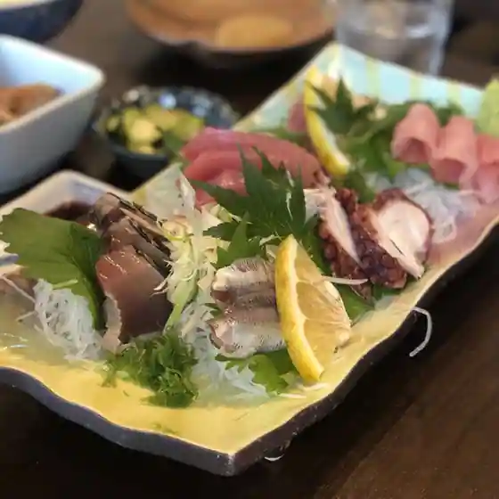
Ikesu Ryori Aki
コナテ
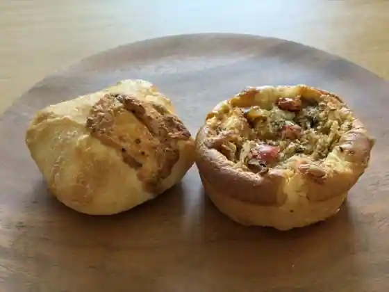
Konate
ちーえん
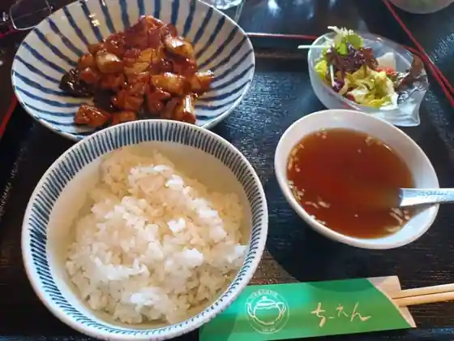
Chien
Sights
Ohara Fishing Port Minato no Asa City
Taito Saki Lighthouse

Taito Beach
Kuniyoshi Shrine Kazusa Izumotaisha
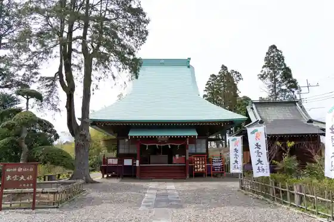
ISUMI Glamping Resort & Spa SOLAS

Iizuna Tera
Fufu Iwa
Hunt+ (Hantopurasu) / Shuryo Experience
Ohara Beach
Poppo no Oka
Kiyomizudera
TAKIVILLAGE
Ohara Nosambutsu Chokubai Tokoro (Guriinsupa Isumi)
Chibaken Isumi Kankyo to Bunka no Sato Center
Goja Hako Ohara Mise
Raku Do Kai
Goja Hako Misaki Mise
Nosambutsu Chokubai Tokoro Na no Hana Nichi Zai Mise (Main Shop)
Nosambutsu Chokubai Tokoro Na no Hana Naniwa Mise
Wairudokizzu Misaki Oto Campground